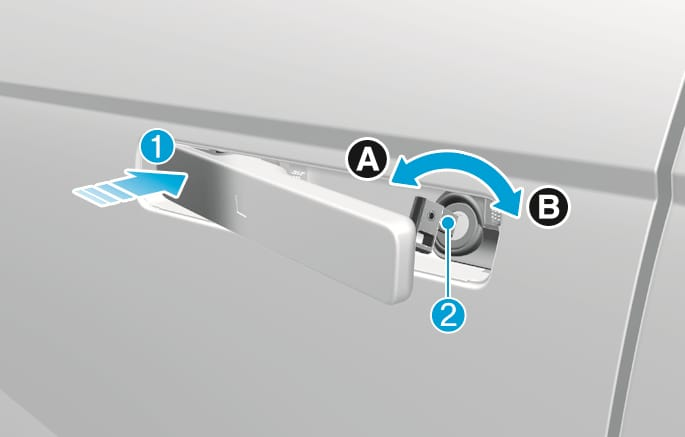
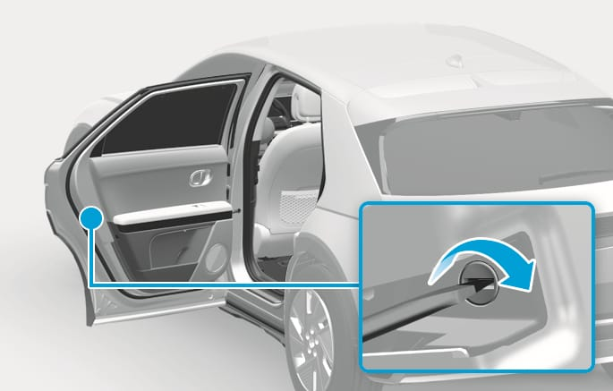

비상 키 사용하기
비상 키를 차량 안에 두지 말고 휴대하거나 안전한 장소에 보관하십시오. 비상 키가 없으면 비상시 도어를 열 수 없습니다.
배터리가 방전되어 차량 도어의 잠금 장치가 작동하지 않거나 어린이 또는 동물이 탑승한 상태로 도어가 잠긴 경우, 비상 키를 이용해 운전석 도어를 여십시오.

2C_UsingEmerengcyKey
-
도어 핸들 앞 부분(1)을 누르십시오.
-
도어 핸들 뒷 부분 안쪽 키 홀(2)에 비상 키를 넣고 오른쪽으로 돌려 잠금을 해제하십시오.
-
비상 키를 왼쪽으로 돌리면 도어가 잠기고(A) 오른쪽으로 돌리면 잠금이 해제(B)됩니다.
-
-
도어 핸들을 당겨 운전석 도어를 여십시오.
-
키 홈이 얼어 열리지 않을 때는 가볍게 두드리거나 간접적(손의 체온 등)으로 따뜻하게 하여 주십시오.
-
키를 좌우로 반복해서 돌리거나 도어 잠금/잠금 해제 버튼을 교대로 반복해서 작동하면 보호회로가 작동해 일시적으로 기능이 작동하지 않을 수 있습니다.
도어 핸들에서 얼음 제거하기
날씨가 매우 추운 겨울철에 도어 핸들의 내부가 얼어붙어 열리지 않는 경우 주먹 안쪽으로 도어 핸들을 두드려서 얼음을 제거할 수 있습니다.
다음 지시에 따라 도어 핸들에서 얼음을 제거하십시오.
-
주먹 안쪽으로 도어 핸들의 주변을 원형으로 두드려서 도어 핸들 내부의 결빙을 제거하십시오.
-
도어 잠금을 해제하여 핸들이 튀어나오는지 확인하십시오.
핸들이 튀어나오지 않으면 핸들 주변을 계속 두드려서 결빙을 더 제거하십시오.
-
튀어나온 도어 핸들을 잡고 도어를 몇 차례 열고 닫아서 남은 얼음을 제거하십시오.
-
장신구를 착용했거나 물체를 든 손으로 두드리지 마십시오. 차량 도장이 손상될 수 있습니다.
-
도구 또는 과도한 힘을 사용하여 두드리지 마십시오. 두드린 곳이 파일 수 있습니다. 현관문을 두드리는 정도의 힘으로 두드리십시오.
배터리 방전 등으로 인해 차량 도어의 잠금 장치가 작동하지 않는 경우, 길고 납작한 물체를 이용해 도어를 잠그십시오.
-
모든 도어를 각각 잠가야 합니다.

2C_HowToLockDoorInEmergency
-
도어를 여십시오.
-
도어 안쪽의 비상 잠금 장치에 길고 납작한 물체를 넣고 잠금 방향으로 돌리십시오.
-
왼쪽 도어의 경우 오른쪽으로, 오른쪽 도어의 경우 왼쪽 방향으로 돌리면 도어가 잠깁니다.
-
-
도어를 닫으십시오.